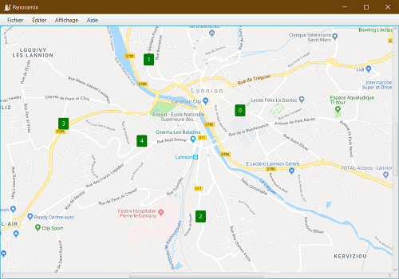
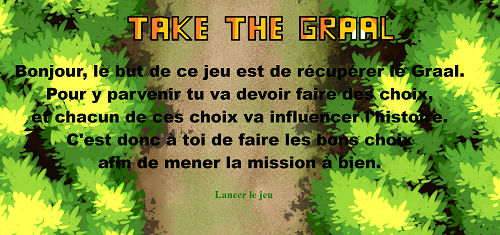
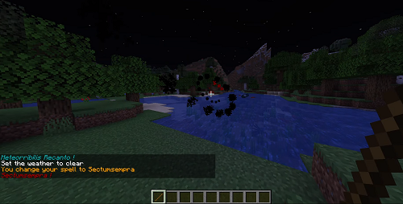
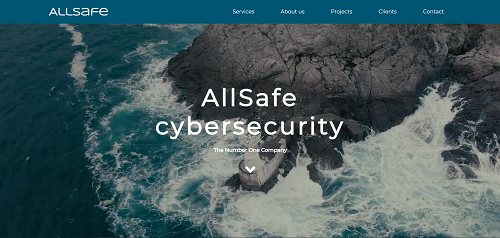
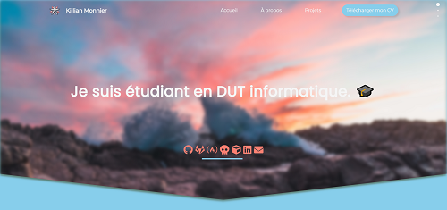
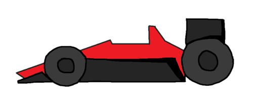
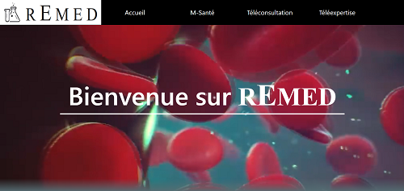
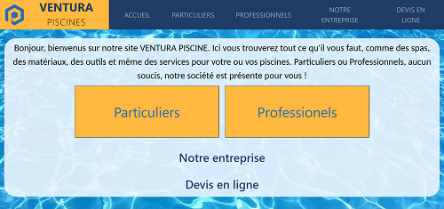
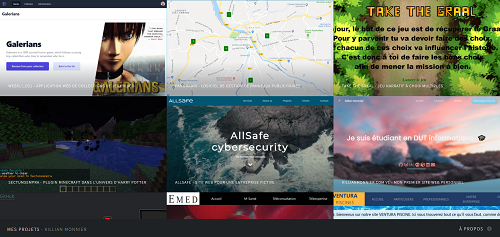

Dépôt GitHub
Environnement
webcli_d21 - Application web de collections de jeux vidéo
Projet de groupe réalisé au 4ème semestre de mon DUT. C'est un site catalogue réalisé avec le
framework CodeIgniter en PHP. Il y a une gestion et administration des utilisateurs ainsi qu'une
collection personnelle disponible pour chacun des utilisateurs. Des rôles sont liés aux utilisateurs
ce qui permet par exemple d'afficher seulement l'onglet "Administration" aux utilisateurs "admin".

Dépôt GitHub
Disponible sur GitHub
Panoramix - Logiciel de gestion de panneaux publicitaires
Projet de groupe réalisé au 2ème semestre de mon DUT. C'est un logiciel réalisé avec le framework
JavaFX en Java. Il permet d'ajouter, de modifier et de supprimer des panneaux sur une carte
interactive. Il permet également de gérer des clients et des locations associées aux panneaux
existants. Un système d'enregistrement des données en local est également disponible.

Dépôt
GitHub
Disponible sur GitHub
Environnement
Take The Graal - Jeu narratif à choix multiples
Développé en collaboration avec Nicolas Bourbasquet lors du projet final de la spécialité ISN du
Baccalauréat Scientifique. C'est un jeu narratif réalisé avec la bibliothèque p5.js en JavaScript.
Nous avons utilisé une chaine de caractère à plusieurs lignes comportant tous les scénarios
possibles puis l'avons analysé puis interprété avec différents processus.

Dépôt
GitHub
Disponible sur GitHub
Disponible sur Spigot
Sectumsempra - Plugin Minecraft dans l'univers d'Harry Potter
Création d'un plugin Minecraft en 1.15.2 avec l'API Spigot pour le serveur PoudlardRP. Vous pouvez
utiliser le maléfice Sectumsempra et le sort Vulnera Sanentur ainsi que le sortilège Meteorribilis
Recanto à l'aide de la Baguette de Sureau.

Dépôt GitHub
Environnement
AllSafe - Site web pour une entreprise fictive
Développé en collaboration avec Kilian Le Borgne lors de ma première année de DUT. AllSafe
Cybersecurity est un site web pour une entreprise fictive de cybersécurité.

Dépôt GitHub
Environnement
killianmonnier.com V1 - Mon premier site web personnel
Réalisé durant ma première année de DUT. J'ai utilisé le plugin fullpage.js ainsi que du SCSS pour le
style. J'ai également pioché quelques éléments visuels sur codepen.io

Dépôt
GitHub
TrackManiaReloaded - Jeu vidéo de course en 2D
Réalisé durant la GamJam organisée par Nathan Royer. TrackManiaReloaded reprend les codes de la série
de jeu bien connue, Trackmania. De solides compétences en algèbre linéaire étaient requises.

Dépôt GitHub
Environnement
rEmed - Site web sur la E-médecine
Réalisé en groupe lors de notre première année de DUT. Ce site web est sur le thème de l'informatique
et de la santé et traite du cas de la E-médecine.

Dépôt
GitHub
Environnement
Ventura Piscines - Site web pour une entreprise
Ce site web sur un thème imposé est un travail de groupe réalisé lors de notre premier semestre de
DUT.

Dépôt
GitHub
Environnement
mauxnier.github.io - Site vitrine de mes projets
Réalisé lors de mon 4ème semestre de DUT. Ce site web répertorie la plupart de mes projets que j'ai
pu réaliser.
{kind=link}
{kind=link}
{kind=link}
{kind=link}
{kind=link}
{kind=link}
{kind=link}
{kind=link}
{kind=link}
{kind=link}